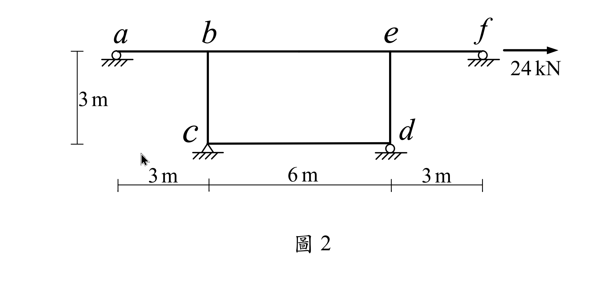

考題編號：SA-2021-2
主分類： SA-U2-3 靜不定結構與位移
副分類： 無
分析法： 傾角變位法
標籤： 傾角變位法 有側移剛架 對稱結構 反對稱載重 連桿效應
1. 原始題目重述 (Problem Restatement)
如圖所示之剛架結構，不考慮桿件的軸向變形：
- $a, d, f$ 點為滾支承
- $c$ 點為鉸支承
- 桿件斷面性質：所有桿件具相同彈性模數 $E$ 與慣性矩 $I$，且 $EI = 20000 \text{ kN-m}^2$
- 幾何尺寸：梁 $ab = 3\text{m}$, $be = 6\text{m}$, $ef = 3\text{m}$；柱 $bc = 3\text{m}$, $ed = 3\text{m}$。
- 載重：於 $f$ 點受向右水平力 $24 \text{ kN}$。
求 $abef$ 梁桿件的彎矩圖 (BMD)、$b$ 點轉角 $\theta_b$ 及 $b$ 點水平位移 $\Delta$。（25 分）

圖說：頂部連續梁 $abef$ 總長 12m，由兩根 3m 柱 $bc, ed$ 支撐於 $b, e$ 點。底部 $c$ 為鉸支承、$d$ 為滾支承，且 $c-d$ 間有一實線相連。
2. 考題核心精神與出題者意圖 (Core Concepts & Examiner's Intent)
本題的核心在於「對稱幾何 + 反對稱載重」的簡化，以及對圖式中隱含邊界條件的正確解讀。
出題者畫了一條連接底部 $c, d$ 兩支承的實線，這是測試考生是否能辨識出它代表一根「軸向剛性連桿 (tie rod)」。因為 $d$ 是滾支承，若無此連桿，$ed$ 柱將無法承受任何剪力（成為鐘擺柱）。有了連桿 $cd$，$d$ 點的水平位移被強制與 $c$ 點相同（$\Delta_d = \Delta_c = 0$），使得 $d$ 點在結構分析上完全等效於鉸支承。
這使得整座剛架成為完美對稱結構，在面對向右的 $24\text{ kN}$ 反對稱側力時，會產生完美的反對稱變形（$\theta_b = \theta_e$ 且兩柱均分剪力）。
3. 解題戰略地圖與陷阱分析 (Strategic Roadmap & Trap Analysis)
解題策略：
- 確認邊界條件：連桿 $cd$ 使 $\Delta_d = 0$。柱底 $c, d$ 視為鉸接（因 $d$ 為滾支承無法傳遞彎矩，且無相對水平位移）。梁端 $a, f$ 為滾支承，彎矩為零。
- 利用反對稱性：結構對稱、載重反對稱 $\Rightarrow \theta_b = \theta_e$，且兩柱承受相同的層剪力（各 $12\text{ kN}$）。
- 傾角變位法：以 $b$ 節點列方程式即可。建立 $M_{ba}, M_{be}, M_{bc}$，利用 $\sum M_b = 0$ 及層剪力方程式求解 $\theta_b$ 與側移 $\Delta$。
- 繪製 BMD：計算梁段各端點彎矩，標示於圖上。
陷阱分析：
- 陷阱 1：誤認 $d$ 可自由滑動：若忽略 $c-d$ 實線，將 $d$ 視為純滾動支承，會得出 $ed$ 柱無剪力、$M_{ed}=0$，使全結構非對稱變形，計算極端繁複且失去出題意義。
- 陷阱 2：內部彎矩正負號錯亂：由傾角變位法求得的端彎矩是「作用於桿端」的力矩，轉換為 BMD（受拉側）時必須極度小心。
3.5 變數層次分析 (Variable Hierarchy Analysis)
複習提示：第一次解題後，在每個卡住的知識點旁標記
⚠；第二次複習時只看有⚠的項目。
最終目標
利用反對稱性大幅簡化未知數，求出側移與轉角，進而繪製梁的彎矩圖。
本題關鍵公式（依計算順序）
$$\text{Step 1: 反對稱特性 } \theta_b = \theta_e = \theta \text{, } V_{bc} = V_{ed} = \frac{P}{2}$$
$$\text{Step 2: } M_{bc} + M_{ed} + \boxed{P} \cdot h = 0 \Rightarrow M_{bc} = -\frac{Ph}{2}$$
$$\text{Step 3: } M_{bc} = \frac{3EI}{L_{bc}} \left( \theta_b - \frac{\Delta}{L_{bc}} \right)$$
$$\text{Step 4: } \sum M_b = 0 \Rightarrow \frac{3EI}{L_{ab}} \theta_b + \frac{2EI}{L_{be}} (2\theta_b + \theta_e) + \boxed{M_{bc}} = 0$$
L1：題目直接給定
看到題目就能讀出的數字，不需要任何公式。
| 符號 | 數值 | 說明 |
|---|---|---|
| $EI$ | 20000 kN-m² | 桿件抗彎剛度 |
| $L_{ab}, L_{ef}$ | 3 m | 懸臂梁段長度 |
| $L_{be}, h$ | 6 m, 3 m | 中間梁長、柱高 |
| $P$ | 24 kN | 水平側向力 |
L2：需知識點推導
需要知道公式名稱與適用條件，套入 L1 即可算出。
Step 2：層剪力平衡
| 符號 | 公式/來源 | 卡關? |
|---|---|---|
| $M_{bc}$ | 柱頂彎矩 $= -V_{col} \times h = -(24/2) \times 3$ |
L3：深層知識（不懂就卡住）
L2 中某些公式本身需要背景概念才能正確應用的知識點。
| 知識點 | 說明 | 卡關? |
|---|---|---|
| 連桿效應 (Tie-rod) | $c-d$ 間的實線強制 $\Delta_d = \Delta_c = 0$，將原有的機構行為轉為靜定基座。 | |
| 反對稱變形 | 對稱結構受反對稱載重時，對稱節點轉角相同 ($\theta_b = \theta_e$)。 | |
| 內力彎矩符號轉換 | 傾角變位法算出的順時針端彎矩：作用於左端時造成上方受拉(負)，作用於右端時造成下方受拉(正)。 |
4. 步驟化詳細計算過程 (Step-by-Step Detailed Calculation)
📊 互動圖：
SA-2021-2-frame-viz.html
Step 1：邊界條件與反對稱性分析
底部有連桿 $cd$，故 $\Delta_d = \Delta_c = 0$。柱基 $c, d$ 均無彎矩抵抗能力（鉸與滾支承），可視為鉸支承。
結構為幾何對稱，受反對稱水平載重 24 kN。
因此變形為反對稱：$\theta_b = \theta_e$（設順時針為正），側移為 $\Delta$（向右為正）。
兩柱的勁度完全相同，故均分層剪力：
$$V_{bc} = V_{ed} = \frac{24}{2} = 12 \text{ kN (向左，作用於柱頂)}$$
Step 2：求柱頂彎矩
對柱 $bc$（底端 $c$ 鉸接），取 $c$ 點力矩平衡：
$$V_{bc} \times h + M_{bc} = 0 \Rightarrow 12 \times 3 + M_{bc} = 0 \Rightarrow M_{bc} = -36 \text{ kN-m}$$
（$M_{bc}$ 為作用於柱頂的端彎矩，負號代表逆時針）
Step 3：傾角變位法列式
梁段 $ab$、$ef$ 端點為滾支承，無彎矩，使用修正公式。
$$M_{ba} = \frac{3EI}{3} (\theta_b - 0) = EI \theta_b$$
$$M_{be} = \frac{2EI}{6} (2\theta_b + \theta_e) = \frac{EI}{3} (3\theta_b) = EI \theta_b \quad (\because \theta_e = \theta_b)$$
柱段 $bc$：
$$M_{bc} = \frac{3EI}{3} \left( \theta_b - \frac{\Delta}{3} \right) = EI \theta_b - \frac{EI \Delta}{3}$$
Step 4：節點 $b$ 平衡求解 $\theta_b$
$$\sum M_b = 0 \Rightarrow M_{ba} + M_{be} + M_{bc} = 0$$
將已知 $M_{bc} = -36$ 代入：
$$EI \theta_b + EI \theta_b - 36 = 0 \Rightarrow 2EI \theta_b = 36$$
$$EI \theta_b = 18 \text{ kN-m}^2$$
故轉角：
$$\boxed{\theta_b = \frac{18}{20000} = 0.0009 \text{ rad (順時針)}}$$
（由對稱性，$\theta_e = 0.0009 \text{ rad}$）
Step 5：求解側移 $\Delta$
利用 $M_{bc}$ 方程式：
$$M_{bc} = EI \theta_b - \frac{EI \Delta}{3}$$
$$-36 = 18 - \frac{EI \Delta}{3} \Rightarrow \frac{EI \Delta}{3} = 54$$
$$EI \Delta = 162 \text{ kN-m}^3$$
故側移：
$$\boxed{\Delta = \frac{162}{20000} = 0.0081 \text{ m} = 8.1 \text{ mm (向右)}}$$
Step 6：計算梁桿件端彎矩並判定受拉側
將 $EI \theta_b = 18$ 代回端彎矩：
- $M_{ba} = 18 \text{ kN-m}$ (順時針作用於 $ab$ 右端 $\Rightarrow$ 下緣受拉，正彎矩)
- $M_{be} = 18 \text{ kN-m}$ (順時針作用於 $be$ 左端 $\Rightarrow$ 上緣受拉，負彎矩)
- $M_{eb} = \frac{EI}{3}(2\theta_e + \theta_b) = 18 \text{ kN-m}$ (順時針作用於 $be$ 右端 $\Rightarrow$ 下緣受拉，正彎矩)
- $M_{ef} = EI \theta_e = 18 \text{ kN-m}$ (順時針作用於 $ef$ 左端 $\Rightarrow$ 上緣受拉，負彎矩)
內部彎矩極值（以受拉側朝下為正）：
- $b$ 點左側 ($ab$ 段)：$+18 \text{ kN-m}$
- $b$ 點右側 ($be$ 段)：$-18 \text{ kN-m}$
- $e$ 點左側 ($be$ 段)：$+18 \text{ kN-m}$
- $e$ 點右側 ($ef$ 段)：$-18 \text{ kN-m}$
因跨中皆無外加載重，BMD 為連結各端點的直線，呈明顯的鋸齒狀跳躍，跳躍量為 36 kN-m，恰為柱端彎矩的抵抗力。
5. 關鍵爭議點與進階探討 (Critical Issues & Advanced Discussion)
- 圖示解讀歧異（連桿 $c-d$ 的有無）：本題圖中 $c, d$ 節點間畫有一條實心黑線。若視為無意義的基準線，則 $d$ 點為滾動支承將可自由平移，導致 $ed$ 柱無法承受剪力（淪為無彎矩之鐘擺柱），此時全結構失去對稱性，變成由單一柱 $bc$ 抵抗全側力，計算雖可行但數值極端破碎（$\Delta = 17.55\text{mm}$）。將其解讀為「軸向剛性連桿」不僅符合製圖規範，更使整題數據呈現完美的對稱性與整數解（$\Delta = 8.1\text{mm}, EI\theta=18$），為考場上最安全且最符合出題精神的判斷。
- 節點力矩跳躍：許多學生習慣連續梁的內部彎矩在支承處必須連續。然而在「剛架」中，柱子會提供彎矩抵抗，因此梁的 BMD 在通過柱節點時，會產生等於柱頂端彎矩的劇烈跳躍（如本題從 $+18$ 瞬間跳至 $-18$）。繪圖時務必左右分開標示，切勿平滑連線。